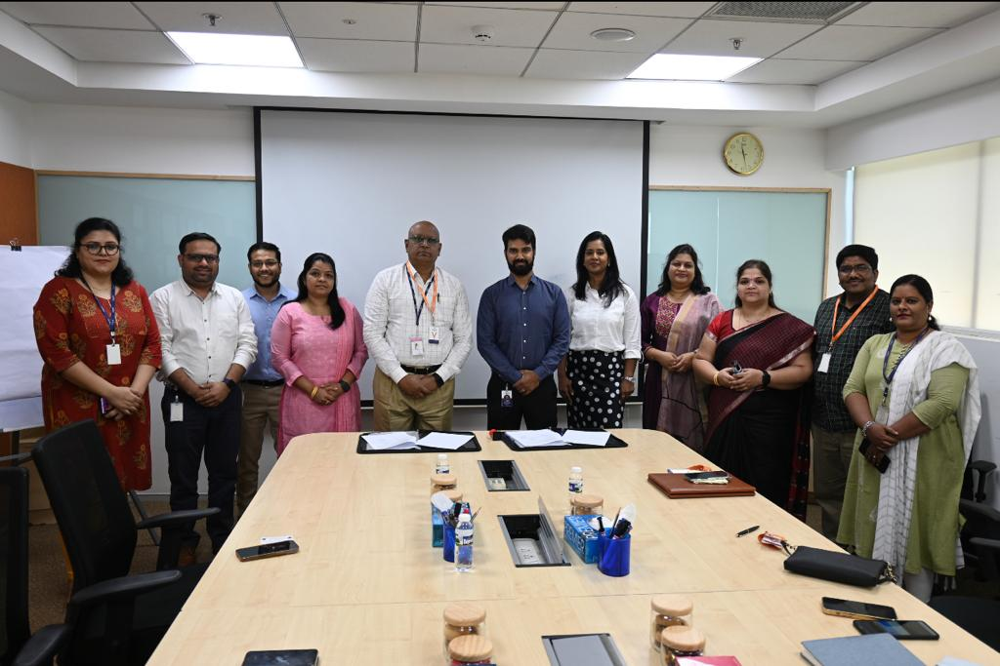

Mahatma Gandhi Institute of Technology (MGIT), Hyderabad is a premier educational institution committed to nurturing excellence in engineering and technology education. Established with a vision to create competent and socially responsible technocrats, MGIT has been a cornerstone of quality education since its inception.
Our Legacy and Vision
Founded in 1997, MGIT has upheld the values of its namesake, Mahatma Gandhi, by striving for holistic education that fosters innovation, ethics, and leadership. Our institution envisions becoming a center of excellence that empowers students to contribute meaningfully to society through cutting-edge technology and impactful research.
Academic Excellence
At MGIT, we offer a diverse range of undergraduate and postgraduate programs in various engineering disciplines. Our dedicated faculty, comprising experts in their respective fields, ensure that students receive a well-rounded education through a blend of theoretical knowledge and practical application. The curriculum is designed to foster critical thinking, problem-solving skills, and a deep understanding of industry trends.
State-of-the-Art Facilities
Our campus is equipped with state-of-the-art facilities that provide students with an immersive learning environment. Modern laboratories, well-stocked libraries, advanced research centers, and robust IT infrastructure support students in their academic pursuits and research endeavors.
Research and Innovation
MGIT encourages a culture of innovation and research. Our students and faculty collaborate on groundbreaking projects that contribute to technological advancements and societal well-being. We strive to instill a passion for lifelong learning and discovery, ensuring that our graduates are well-prepared for the challenges of the ever-evolving global landscape.
Industry Partnerships
We recognize the importance of bridging the gap between academia and industry. MGIT maintains strong ties with leading companies, offering students opportunities for internships, projects, and placements. These connections not only enhance students' practical skills but also increase their employability and readiness for the professional world.

Student Life
Beyond academics, MGIT promotes a vibrant and enriching student life. We encourage participation in various extracurricular activities, clubs, and events that help students develop soft skills, leadership qualities, and a sense of social responsibility. The campus buzzes with cultural festivals, technical symposia, and sports events, fostering an environment of camaraderie and holistic development.
Community Engagement
Embracing Mahatma Gandhi's philosophy of serving the community, MGIT actively engages in social initiatives and community service projects. Through these endeavors, we aim to instill in our students a sense of empathy, compassion, and the desire to make a positive impact on society.
Join Us in Shaping the Future
if you're seeking an institution that values academic excellence, fosters innovation, and nurtures holistic development, Mahatma Gandhi Institute of Technology is the place to be. Join us on this transformative journey of education, research, and personal growth as we strive to create responsible and empowered engineers who will shape the future.